Species
A wild rose, as it grows in nature. Species names are written in italics.
Example: dog rose, Rosa canina
Sound is off until you press Play. Nothing plays by itself.
A digital rose garden
Walk through a quiet garden of roses. Learn where they came from, how they grow, what their colours have come to mean, and how to care for one of your own.
Photo: Laitche, CC BY-SA 4.0
Meet the rose
A rose is a woody, long-lived shrub in the genus Rosa. It belongs to the rose family, Rosaceae, a large plant family that also includes apples, pears, cherries, plums, almonds and strawberries.
Botanists do not agree on exactly how many wild rose species there are. Britannica says about 100; other botanical accounts count between 140 and 180. Most wild species come from Asia, with smaller numbers from Europe, North America and northwest Africa.
Sources: Britannica: Rosaceae, Britannica: useful members of Rosaceae, Wikipedia: Rose.
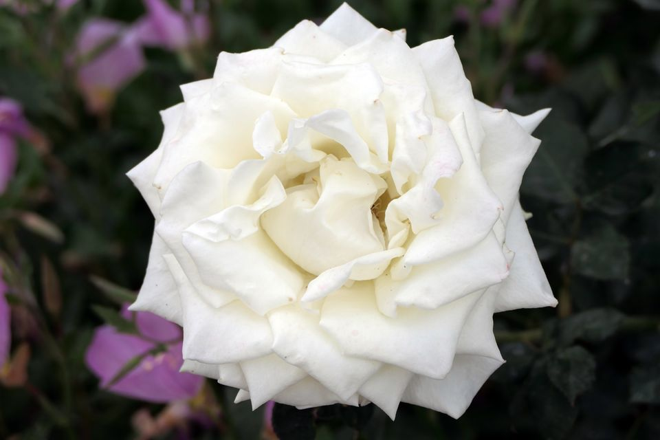
A wild rose, as it grows in nature. Species names are written in italics.
Example: dog rose, Rosa canina
A plant produced by crossing two different parents, often different species. Most garden roses today have hybrid ancestry.
Example: damask rose, Rosa × damascena
A named rose selected and kept going by people, usually from cuttings or grafting. Cultivar names go in single quotes.
Example: Rosa 'Double Delight'
Definition of a hybrid follows the RHS rose growing guide glossary. The × in a name marks a hybrid.
Origins & history
Roses grew wild long before people grew them in gardens. Over thousands of years they became part of art, religion, perfume and food in many cultures.
The oldest known rose fossils come from the Florissant beds in Colorado, USA. Rose-like plants also appear in the fossil record of Europe and Asia.
Roses were being grown in gardens around the Mediterranean, in Persia and in China.
The Mughal emperors brought the Persian-style charbagh garden to India. Emperor Jahangir wrote of a rose attar made at his court.
'La France', bred by Jean-Baptiste Guillot, became the first hybrid tea rose. Its arrival is often used to mark the start of "modern" roses.
The Zakir Hussain Rose Garden opened in Chandigarh. Chandigarh Tourism says it displays about 1,600 rose varieties.
The US Congress named the rose the national floral emblem of the United States.
Sources: Wikipedia: Rose, World History Encyclopedia, University of Illinois Extension, Chandigarh Tourism, Public Law 99-449.
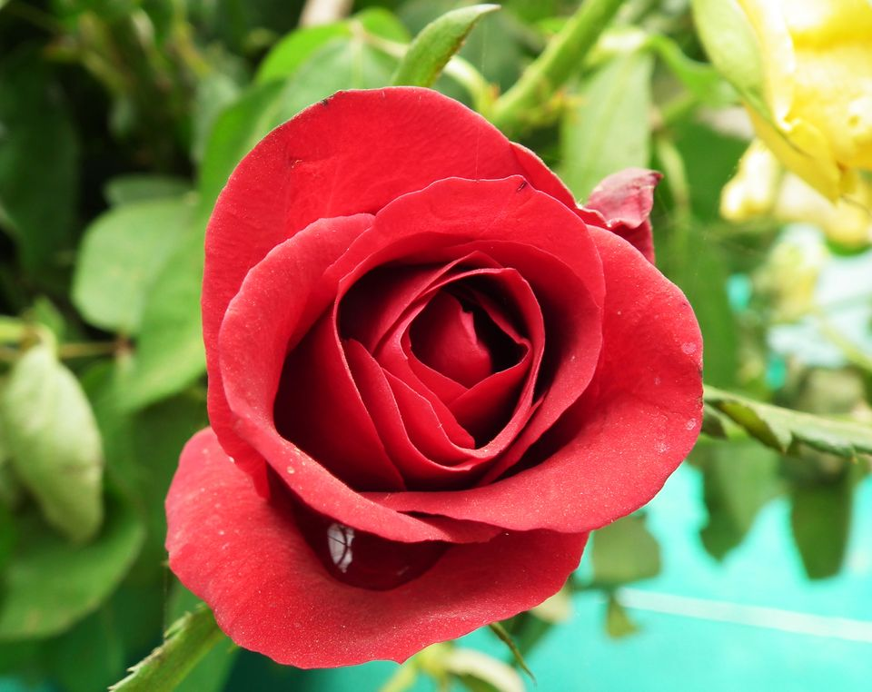
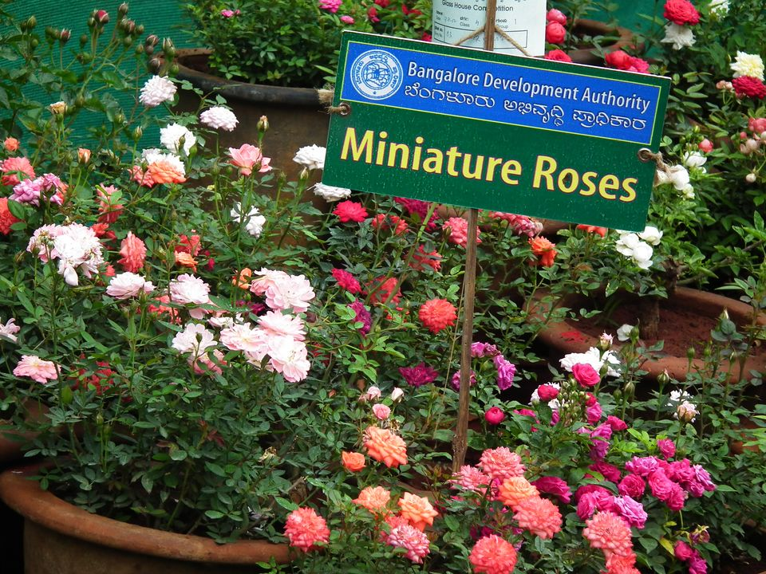
Roses in India
Sources: Gardens in Mughal India (thesis), Times Now, National Geographic, Int. J. Commerce & Business Management, J. Medicinal & Aromatic Plant Sciences.
Photos: Red rose in the rose garden at Lalbagh, Bengaluru by Rameshng at Malayalam Wikipedia, CC BY 3.0, via Wikimedia Commons; Miniature roses at the Lalbagh Flower Show, Bengaluru, August 2012 by Rameshng, CC BY-SA 3.0, via Wikimedia Commons.
Main rose groups
The American Rose Society recognises more than 40 rose classes. Most gardeners only need to know a handful of them.
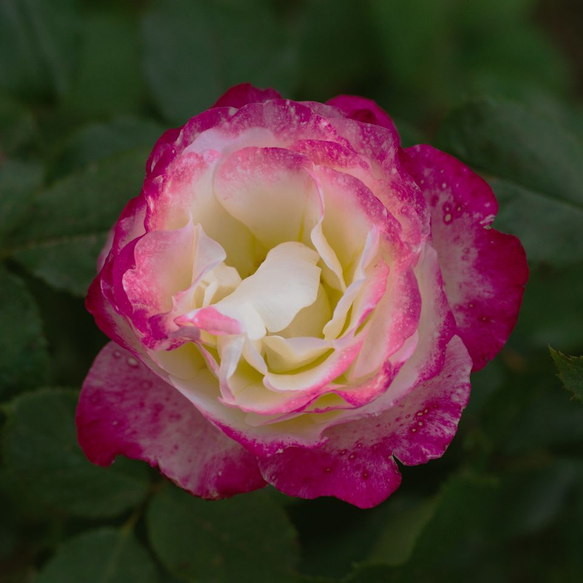
Long, pointed buds open into one large, shapely flower on a long stem. A favourite for cutting and for flower shows.
Photo: Alexey V. Kurochkin, CC BY-SA 4.0
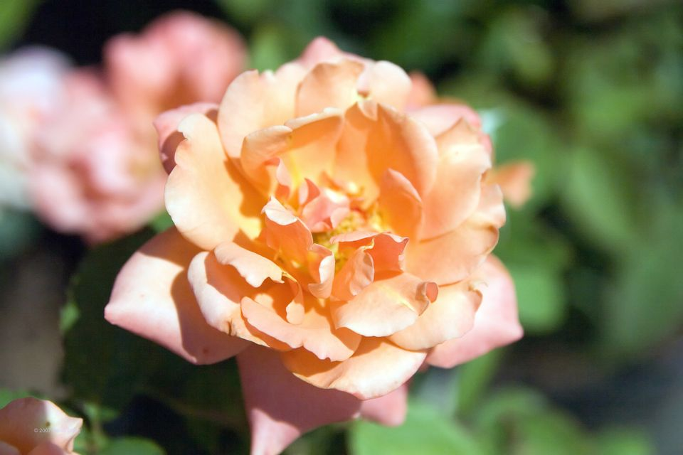
Bred by crossing polyantha roses with hybrid teas. Flowers come in clusters on compact plants, bred for hardiness and better disease resistance.
Photo: David J. Stang, CC BY-SA 4.0
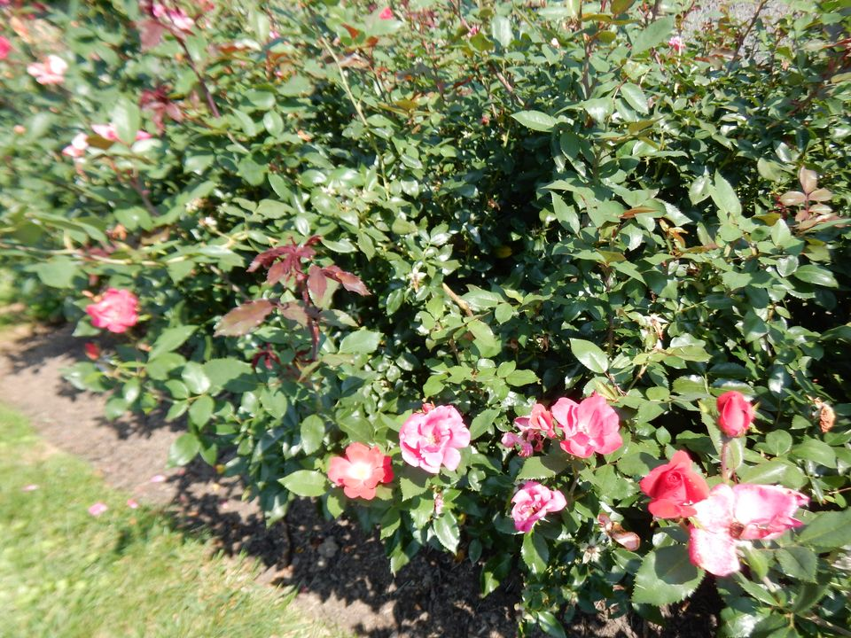
A broad "catch-all" class for roses that do not fit elsewhere. Many are rounded, hardy, free-flowering and blend well into mixed borders and hedges.
Photo: Shuvaev, CC BY-SA 4.0
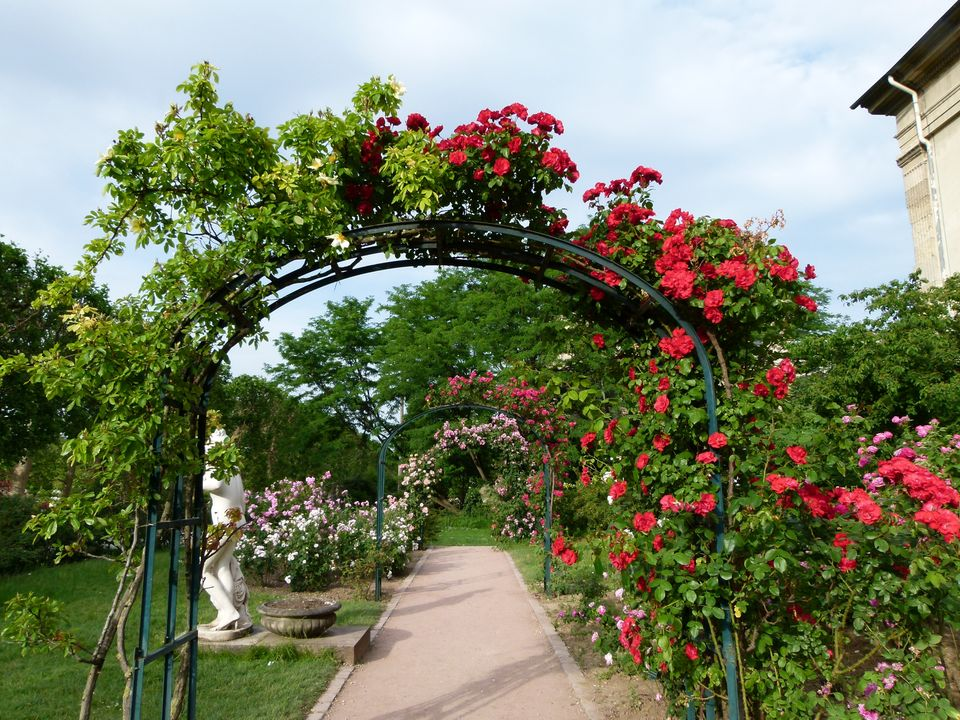
Small bushes with small flowers, descended from a dwarf China rose called 'Rouletii'. Most flower again and again but have little or no scent.
Photo: Rameshng, CC BY-SA 3.0
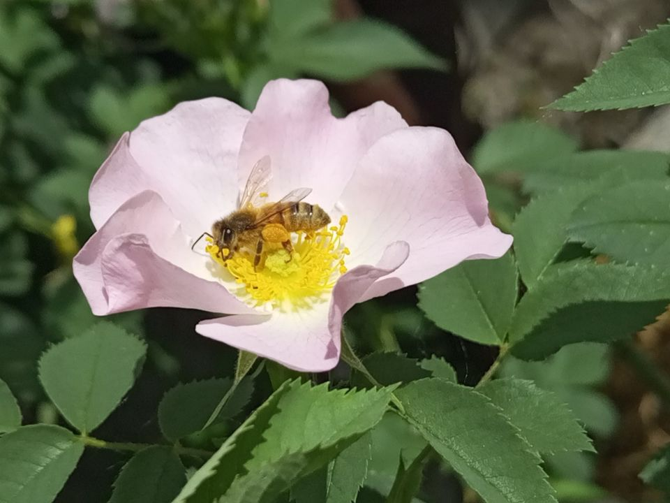
Roses "as nature made them", growing wild across the Northern Hemisphere. Most have simple five-petalled flowers, and many form colourful hips.
Photo: Natalka Ukraine, CC BY 4.0
Sources: University of Illinois Extension: Rose types, NYBG: Classification of roses, RHS rose pruning guide. Cultivar names in captions come from the photographers' own labels.
Rose anatomy
This drawing shows a simple wild-type rose. Garden roses with many petals have the same parts, but their extra petals can hide the centre.
Sources: Wikipedia: Rose (description, flower and fruit), RHS rose growing guide.
Interactive
Move the slider to open the rose. As the sepals fold back, the outer petals open first and the inner petals follow.
Petals unfurling
Colours & meanings
In the 1800s, Europeans and Americans used "floriography", the language of flowers, to send quiet messages with bouquets. Many rose meanings people use today come from those traditions.
Love and passion
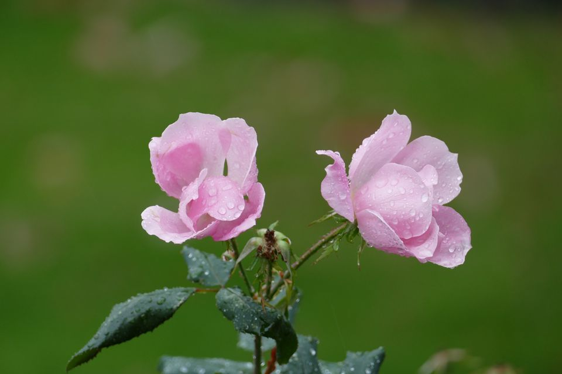
Grace, admiration and gratitude
Innocence, purity and reverence
Friendship, gladness and joy
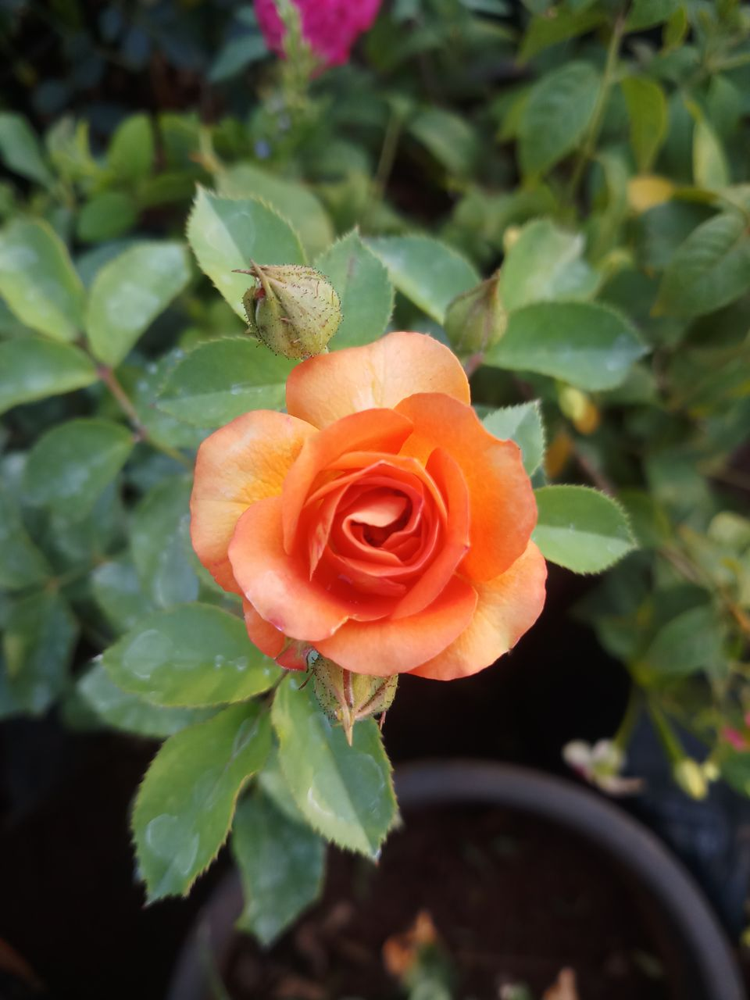
No fixed traditional meaning. Modern sources disagree, so we haven't given one.
Meanings change between cultures. These are traditional European and American associations. Other countries, religions and families may give the same colour a different meaning, or none at all. And no rose is naturally true blue.
Sources: Clemson Cooperative Extension: The secret language of flowers, University of Illinois Extension.
In the garden
Rose scents differ. Some are fruity, others musky or "tea" scented. The RHS suggests smelling roses in bloom before you buy.
Roses flower in summer, and many repeat into autumn. Removing faded flowers (deadheading) encourages more blooms.
If you don't deadhead, many roses form hips. These fruits feed birds such as thrushes and blackbirds in winter.
Roses are pollinated by insects. Bees reach the pollen of single, open flowers easily. Very full, double flowers can offer them little.
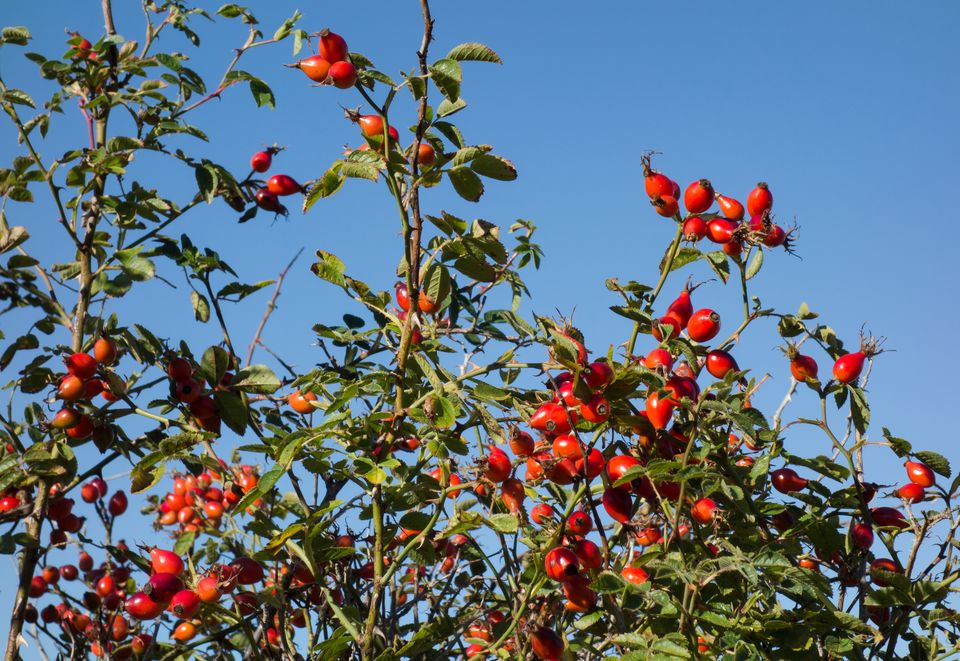
Sources: RHS rose growing guide, Oregon State University Extension, Wikipedia: Rose.
The garden
Filter by colour, then select a photo to see it larger. Use the arrow keys to move between photos and Escape to close.
Showing all 15 photos
Growing roses
Roses are not hard to grow when they are planted in the right place. The basics below are general. Timing and amounts change with your climate and the kind of rose, so check local advice too.
Plant in a sunny spot with at least four hours of sun a day. Avoid very exposed, windy sites, and leave about 60 cm around each plant.
Varies: some roses cope with light shade. Roses in pots do better if the pot itself is shaded for part of the day.
Water new roses regularly until they settle in. For established roses in dry spells, give a good soak about once a week (5–10 litres per plant). Water the soil, not the leaves.
Varies: roses in pots may need water daily in hot weather; sandy soils dry out faster.
Roses like rich soil that holds moisture but drains freely. They dislike waterlogged ground. If you are replacing an old rose, take steps to avoid replant disease.
Varies: heavy clay and very sandy soils both benefit from added organic matter.
Prune once a year to remove dead, diseased or damaged shoots and to open up the centre for air. Different rose types need different pruning.
Varies: the RHS suggests late winter in the UK. TNAU recommends March and October for cut roses in Tamil Nadu.
Mulch with well-rotted manure or compost, leaving a 10 cm gap around the stems. Feed in-ground roses twice a year: before flowering and after the first flush.
Varies: roses in pots need feeding about every two weeks in the growing season.
Watch for black spot (dark spots and yellowing leaves), powdery mildew (white powder), rust (orange pustules) and aphids. Good air flow and clearing fallen leaves help.
Varies: some cultivars resist disease far better than others, and wet weather favours black spot.
Sources: RHS rose growing guide, RHS pruning guide, RHS: powdery mildew, RHS: roses in containers, Oregon State University: rose problems (EC 1520), TNAU Agritech: cut rose.
This guide uses temperate seasons, as in the UK. In warm climates such as much of India the seasons are different, so ask a local nursery or agricultural university when to prune and feed.
Based on the RHS rose growing guide and RHS shrub rose pruning guide.
Uses
From patio pots to huge ramblers that climb through trees, there is a rose for almost every garden space.
Rose oil, also called attar of roses, is made by steam-distilling crushed rose petals. It is a classic perfume ingredient.
Rose water is a related product of rose distillation. People use it in cooking, cosmetics and religious practices.
Rose water flavours South Asian sweets such as barfi and gulab jamun. Petals make gulkand, and hips become jam, jelly or tea.
Only eat roses grown for food. Garden and florist roses are often sprayed with chemicals. This page does not make health claims about roses.
Sources: RHS, Wikipedia: Rose (perfume, food), Wikipedia: Rose hip, J. Medicinal & Aromatic Plant Sciences (gulkand).
Did you know?
Most wild roses have five petals. Two species, Rosa sericea and Rosa omeiensis, usually have only four.
Source: Wikipedia: Rose
Apples, pears, cherries, almonds and strawberries all belong to the rose family, Rosaceae.
Source: Britannica
Each rose hip holds between 5 and 160 tiny, hard fruits called achenes, set among stiff hairs.
Source: Wikipedia: Rose
Miniature roses are usually grown on their own roots rather than grafted, which makes them very winter-hardy.
Source: University of Illinois Extension
Two Southwest Asian roses, Rosa persica and Rosa berberifolia, are the only roses without compound leaves.
Source: Wikipedia: Rose
Kannauj, India's "perfume city", has made rose attar for more than 400 years.
Source: National Geographic
Questions
Not botanically. The sharp points on rose stems are prickles, which grow from the stem's outer layer. A true thorn is a modified shoot.
Source: Wikipedia: Rose
The RHS recommends at least four hours of sunlight a day. Some roses cope with light shade. In hot climates, follow local advice.
Source: RHS rose growing guide
No. Hybrid tea roses come in every colour except true blue and black.
Source: University of Illinois Extension
Yes. Softwood cuttings in spring usually root in about two months. Hardwood cuttings in autumn and winter are slower. Some roses are protected by Plant Breeders' Rights, so you may not propagate them for sale. A grafted rose grown from a cutting may also behave differently from its parent.
Source: RHS rose growing guide
Deadheading encourages more blooms. If faded flowers stay on, many roses form hips and stop making new flowers. Leave them on if you want hips for birds or for decoration.
Source: RHS rose growing guide
A species is a wild rose, such as Rosa canina. A cultivar is a named rose selected and kept going by people, such as Rosa 'Double Delight'. Most garden cultivars have hybrid parents.
In morning light a rose awakes,
With dewdrops trembling on its face,
Each crimson fold a promise makes
Of quiet love and gentle grace.
It does not ask the sun to stay,
Nor begs the wind to pass it by;
It simply blooms from day to day
Beneath the wide and patient sky.
Though thorns may guard its tender heart,
Its fragrance travels far and free,
A reminder, soft yet smart:
True beauty grows with bravery.
So when your days feel dim and grey,
Remember how the roses do;
They bloom, then fade, then find their way
Back into spring, and so will you.
Credits
All photos come from Wikimedia Commons and have been resized and converted to WebP for this site. Licences: CC BY-SA 4.0, CC BY-SA 3.0, CC BY 4.0, CC BY 3.0 and CC0.


.jpg){kind=link}


_on_a_wild_rose_flower,_by_baby-bear.org.jpg){kind=link}